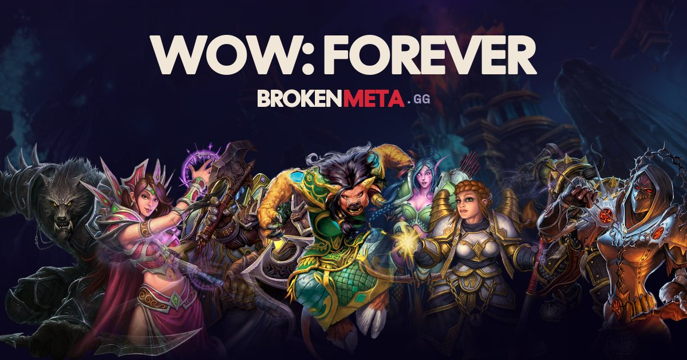

Lancement de WoW Forever : l'heure, les noms, les serveurs et les éditions
World of Warcraft: Forever sort le 4 novembre 2026 à 15 h, heure du Pacifique, selon Blizzard, soit minuit à Paris dans la nuit du 4 au 5 novembre. Voici l'heure dans votre fuseau, le calendrier des jours qui précèdent, comment réserver son nom, ce que l'on sait des serveurs et des éditions, et ce qui n'est pas encore confirmé.
L'heure exacte du lancement, fuseau par fuseau
Blizzard annonce une sortie mondiale le mercredi 4 novembre 2026 à 15 h heure du Pacifique. Le tableau convertit cette heure dans les fuseaux courants ; les décalages sont ceux du 4 novembre, après le passage à l'heure d'hiver aux États-Unis (1er novembre) et en Europe (25 octobre).
| Fuseau | Heure de sortie |
|---|---|
| Los Angeles, Vancouver (Pacifique, UTC−8) | mercredi 4 novembre, 15 h 00 (heure donnée par Blizzard) |
| Denver (Montagnes, UTC−7) | mercredi 4 novembre, 16 h 00 |
| Chicago, Mexico (Centre, UTC−6) | mercredi 4 novembre, 17 h 00 |
| New York, Montréal (Est, UTC−5) | mercredi 4 novembre, 18 h 00 |
| São Paulo (UTC−3) | mercredi 4 novembre, 20 h 00 |
| Londres, Dakar (UTC+0) | mercredi 4 novembre, 23 h 00 |
| Paris, Bruxelles, Genève, Berlin, Madrid (UTC+1) | jeudi 5 novembre, 0 h 00 (dans la nuit du 4 au 5) |
| Alger, Tunis, Casablanca (UTC+1) | jeudi 5 novembre, 0 h 00 |
| Athènes, Helsinki (UTC+2) | jeudi 5 novembre, 1 h 00 |
| Istanbul, Moscou (UTC+3) | jeudi 5 novembre, 2 h 00 |
| Dubaï (UTC+4) | jeudi 5 novembre, 3 h 00 |
| Tokyo, Séoul (UTC+9) | jeudi 5 novembre, 8 h 00 |
| Sydney (UTC+11, heure d'été) | jeudi 5 novembre, 10 h 00 |
| Auckland (UTC+13, heure d'été) | jeudi 5 novembre, 12 h 00 |
Seule l'heure du Pacifique vient de Blizzard : le reste est notre conversion. Un détail à surveiller : la page d'annonce de Blizzard écrit « PDT » à un endroit et « PST » à un autre. Le 4 novembre, la côte ouest est à l'heure d'hiver (PST, UTC−8), donc 15 h valent 23 h UTC, soit minuit à Paris, ce que donnent aussi plusieurs sites de presse. Si Blizzard avait voulu dire PDT, la sortie serait une heure plus tôt (23 h le 4 novembre à Paris). Nous mettrons cette page à jour dès que Blizzard le confirme.
Le calendrier jusqu'à la sortie
- 20 octobre : envoi par e-mail des codes Invite-A-Friend (valables du 4 au 11 novembre, sans accès à la bêta).
- 21 octobre : fin de la bêta.
- 27 octobre au 3 novembre : réservation anticipée des noms pour les acheteurs d'une édition éligible.
- 4 novembre, 15 h (Pacifique) : lancement du jeu.
- 9 décembre : déblocage des raids Barrow Deeps, Hyjal Summit et Onyxia's Lair (calendrier d'Icy Veins uniquement, à considérer comme provisoire).
Réserver son nom : deux noms, uniques par région
Chaque personnage de WoW Forever porte deux noms, comme un prénom et un nom de famille. Selon Blizzard, c'est la combinaison complète qui doit être unique dans une région : un même prénom peut exister plusieurs fois si le nom diffère.
- La réservation anticipée court du 27 octobre au 3 novembre 2026, pour les achats d'une édition éligible (Skyborne Heroic Pack, Epic Pack ou Warcraft Forever Collection). Le Heroic Pack en donne l'accès pour trois personnages.
- Les noms sont attribués dans l'ordre d'arrivée, et Blizzard ne peut pas garantir le nom voulu. S'il est pris, il faut en choisir un autre ou passer par le générateur aléatoire du jeu.
- Certains mots, graphies et répétitions de lettres sont restreints, et le système évalue les deux noms ensemble : couper un mot interdit en deux ne le rend pas valide.
- Le second nom peut être masqué au-dessus des personnages grâce à une option des barres de nom ; il reste visible dans le chat.
- La bêta ne garantit pas l'accès à la réservation : un joueur invité en bêta doit acheter une édition éligible pour réserver avant le lancement.
Serveurs : plus de royaumes à choisir
Blizzard décrit une structure « realmless » : un Azeroth plus large, sans liste de royaumes. D'après la présentation du BlizzCon relayée par la presse (Warcraft Tavern, Method.gg), on choisit plutôt un mode de jeu : Normal, JcJ, Jeu de rôle, et Hardcore plus tard. Les modes restent séparés, et les camps Alliance et Horde ne se mélangent pas en groupe.
Les modes de jeu ne figurent pas dans les deux articles de Blizzard que nous avons lus : ils viennent de comptes rendus du BlizzCon. Les régions de serveurs ne sont pas listées non plus. À confirmer au lancement.
Files d'attente : ce que l'on ne sait pas
Nous n'avons trouvé aucune information officielle sur les files d'attente de la soirée de lancement. Nous ne pouvons donc pas dire si la connexion sera fluide ou non ; cette section sera mise à jour si Blizzard communique.
Quelle édition pour le lancement ?
Le jeu est inclus dans l'abonnement WoW ou le temps de jeu, sans achat séparé (Blizzard). Les trois éditions sont optionnelles : le Skyborne Heroic Pack (race Skyborne, Zephras Isle, réservation des noms, une monture), l'Epic Pack (plus l'accès à la bêta, 30 jours de temps de jeu et deux codes d'invitation de plus) et la Warcraft Forever Collection (plus Warcraft III: Reforged). Le détail et les prix relevés par la presse sont sur la page des éditions.
Se préparer : classe, race, talents
Pour choisir avant minuit, nos pages s'appuient sur les données du client de la bêta et sur notre simulateur de niveau 60. Elles sont chiffrées, et leurs limites sont affichées (par exemple, le classement des mêlées suppose la table d'attaque de Classic).
- La tier list niveau 60 classe les spécialisations par DPS simulé.
- Quelle race choisir donne, classe par classe, les racials du client et l'écart de DPS qu'ils entraînent (de 0 à 2,5 % environ).
- Le guide de leveling 1-60 liste les zones, les donjons et les rangs de métiers par tranche de niveau, en signalant ce qui vient de Classic.
- Le calculateur de talents et les guides de spécialisation donnent un build niveau 60 et un équipement de pré-raid.
Ce qui n'est pas confirmé
- L'heure exacte en Europe (minuit CET selon notre conversion, voir la note sur PDT et PST).
- Les files d'attente et la stabilité des serveurs le soir du lancement.
- Les modes de jeu et les régions (annoncés au BlizzCon, absents des articles officiels lus).
- Ce que la bêta conserve au lancement : Blizzard ne le précise pas dans les annonces consultées.
- Les prix en euros des éditions et le contenu de l'édition collector physique.
Questions fréquentes
À quelle heure sort WoW Forever en France ?
Selon notre conversion de l'heure annoncée par Blizzard (15 h, heure du Pacifique, le 4 novembre 2026), le jeu sort à minuit à Paris, dans la nuit du 4 au 5 novembre. Blizzard écrit « PDT » et « PST » à des endroits différents de son annonce : si c'était PDT, la sortie serait à 23 h le 4 novembre. Nous mettrons à jour dès confirmation.
Faut-il acheter WoW Forever pour jouer ?
Non. Selon Blizzard, le jeu est accessible avec un abonnement World of Warcraft ou du temps de jeu. Les éditions Skyborne sont optionnelles.
Comment réserver son nom de personnage ?
Par la réservation anticipée, du 27 octobre au 3 novembre 2026, ouverte aux acheteurs d'une édition éligible. Les noms sont attribués dans l'ordre d'arrivée, sans garantie. Chaque personnage a deux noms, et leur combinaison doit être unique dans la région.
Y a-t-il des royaumes à choisir ?
Non : Blizzard décrit une structure sans royaumes (« realmless »). On choisit un mode de jeu (Normal, JcJ, Jeu de rôle, puis Hardcore plus tard) d'après la présentation du BlizzCon, à confirmer au lancement.
Y aura-t-il des files d'attente le soir du lancement ?
Nous n'avons trouvé aucune annonce officielle à ce sujet. Nous ne pouvons ni l'affirmer ni l'exclure.
Que contient chaque édition ?
Heroic Pack : race Skyborne, Zephras Isle, réservation des noms, monture, cosmétiques et un code d'invitation. Epic Pack : le tout plus l'accès à la bêta, 30 jours de temps de jeu et trois codes au total. Warcraft Forever Collection : l'Epic Pack plus Warcraft III: Reforged. Le détail est sur la page des éditions.
Quand sortent les premiers raids ?
Le calendrier d'Icy Veins annonce le déblocage de trois raids (Barrow Deeps, Hyjal Summit, Onyxia's Lair) le 9 décembre 2026. Blizzard ne l'a pas repris dans les annonces que nous avons lues : c'est provisoire.
Quelle classe jouer pour le lancement ?
Notre tier list niveau 60 classe les spécialisations par DPS simulé, avec sa méthode et ses limites. Les écarts de race sont petits : jouez la classe et la race que vous préférez.